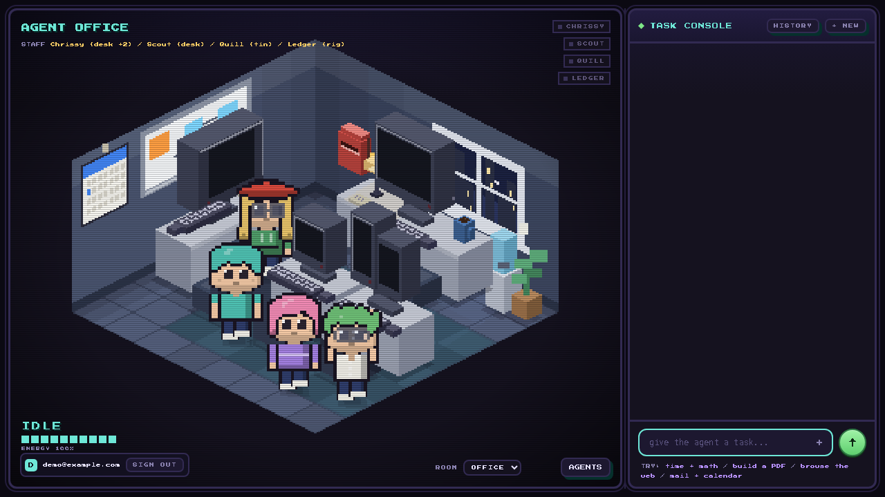
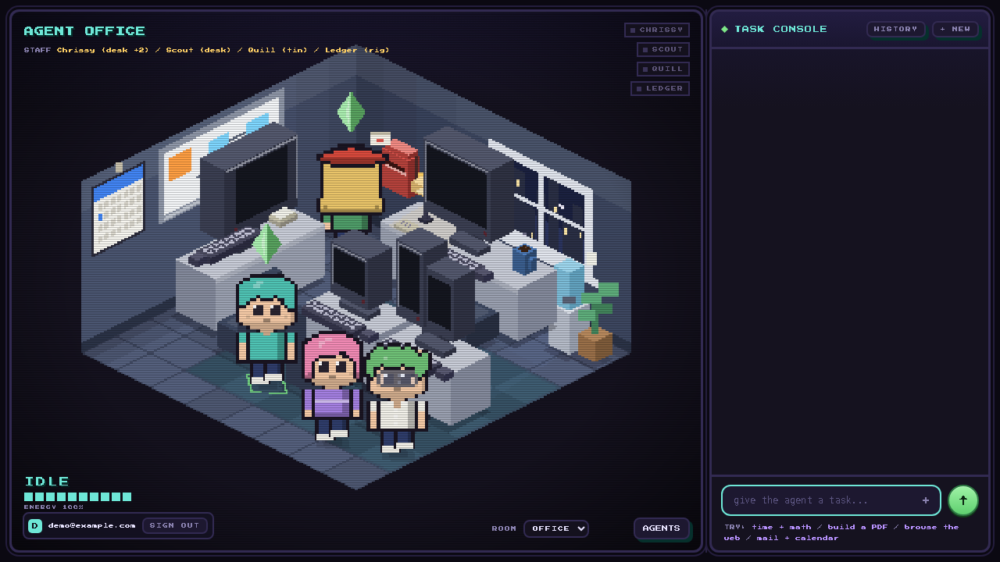
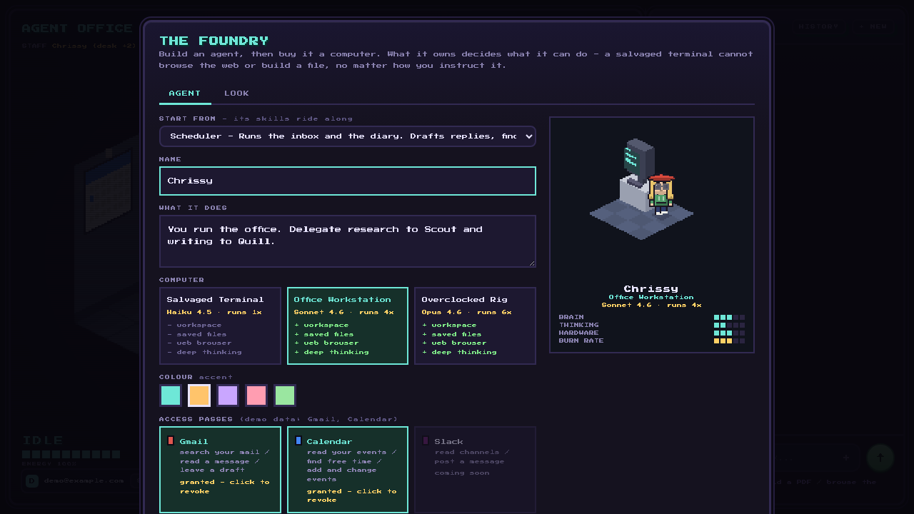
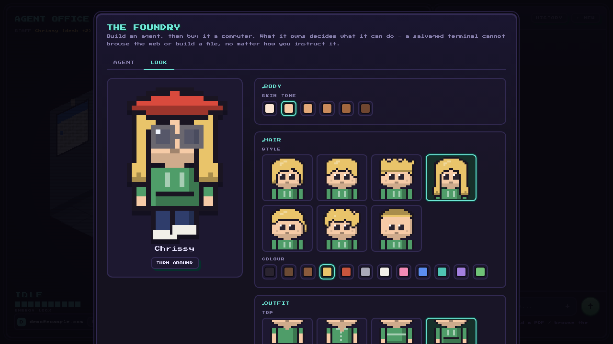
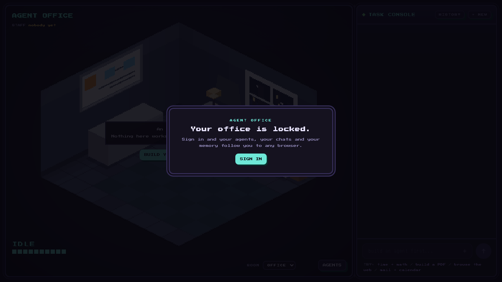
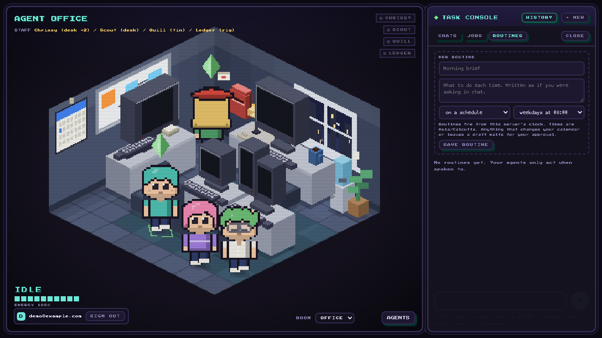
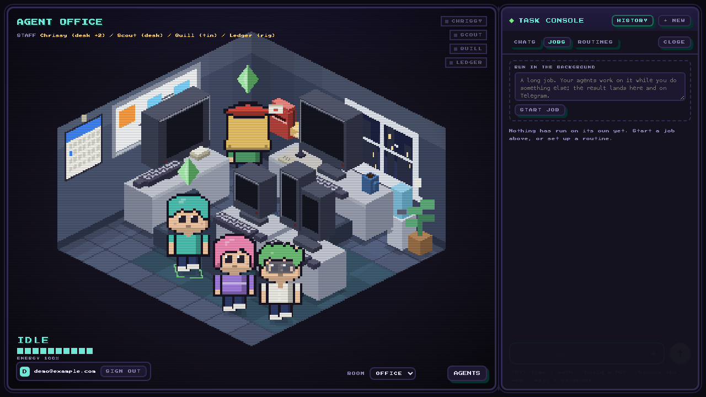
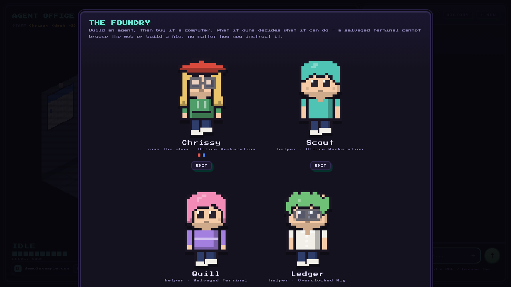

A personal agent tribe that lives in a pixel office.
Strands Agents on Amazon Bedrock AgentCore, with a face you can watch work.





Real Gmail through the AgentCore token vault. The stub inbox works the same way with no account, so the whole flow demos offline.
The agent prepares; the human sends. There is no send tool to misuse.
List the week, find free slots, create and update events. No delete tool - cancelling emails everyone.
Invitations only go out when the user asked for them. The agent says whether anyone was told.
Grant Gmail to the scheduler, not to the writer. A pass to an unlinked account is dropped automatically.
Link Gmail and a letterbox appears. Link Calendar and a wall calendar goes up. Agents walk to them.


Summarising conversation manager with proactive compression. The tenth long turn no longer dies on context overflow.
Retry strategy with exponential backoff, including Bedrock's pre-stream throttle that the default misses.
A hung page or VM comes back as an error the model can route around, not a frozen tab.
SDK metrics summed per user per day into DynamoDB. A token budget stops runaway routines; the ENERGY bar in the room is the real number.
Session snapshots in S3. Reopen a chat and the agent genuinely remembers.
Tools, refusals, mail, calendar, delegation, parallel fan-out. 20 of 20 passing on Haiku.

Claude Haiku 4.5, Sonnet 4.6 and Opus 4.6 via the Strands BedrockModel, streaming, with extended thinking for the thought clouds.
The agent container. Session affinity, SSE streaming, detached jobs with a busy health check.
Workload identity and OAuth2 token vault for Google, per user, per scope.
Sandboxed Python for documents and data; a cloud browser whose frames paint onto the agent's monitor.
Sign-in, the public UI service, and the images for both services.
State, snapshots and files, the clock for routines, and the logs that explained every bug.
Open source, MIT.
Build a team, give them computers, watch them work.